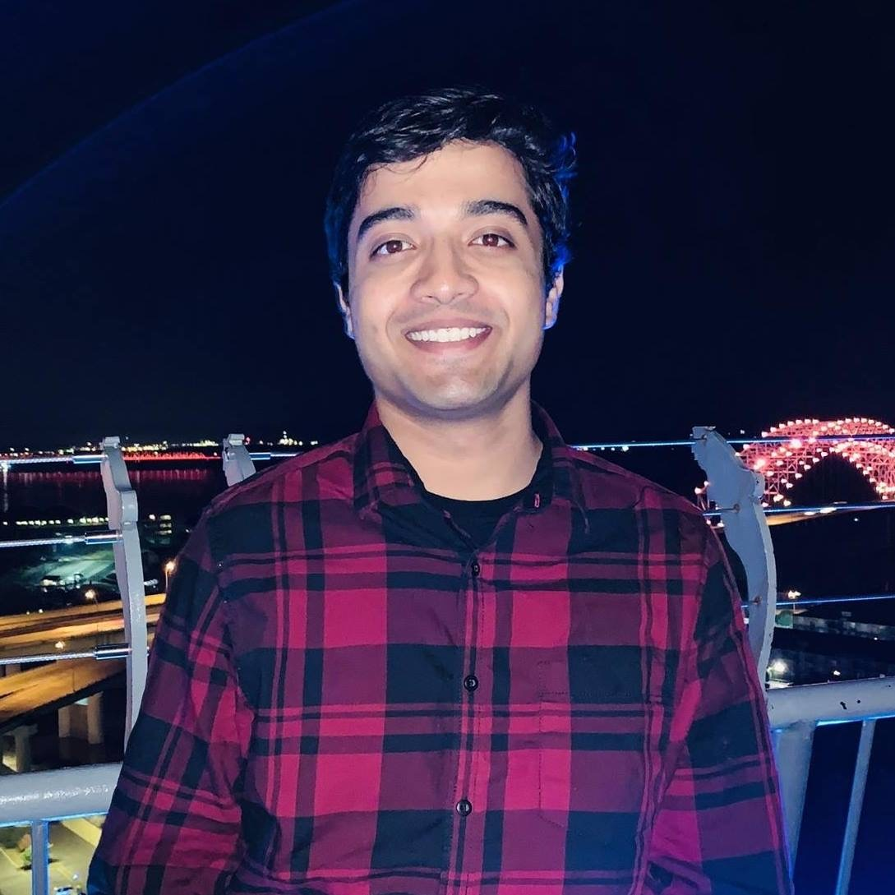

Vardhan Dongre
Ph.D. Student & AI Researcher
I am a Ph.D. candidate in Computer Science at the University of Illinois Urbana-Champaign, where I am advised by Vikram S. Adve and Dilek Hakkani-Tür. I also closely collaborate with Gokhan Tur and John F. Reid.
Research
My work lies at the intersection of machine learning, natural language processing, and computer vision. I am particularly interested in conversational generative agents that can interact with both the digital and physical world for real-world applications.
I am affiliated with the AIFARMS Institute and a member of the ConvAI Lab at UIUC. My work has been generously supported by gifts and grants from Amazon Science, Adobe Research, NSF, and DARPA.
Interests
- Conversational Agents
- Multimodal Reasoning
- Alignment & Control of LLMs
- Interactive Physical Intelligence
News
Selected Publications
Vardhan Dongre, Chi Gui, Shubham Garg, Hooshang Nayyeri, Gokhan Tur, Dilek Hakkani-Tür, Vikram S. Adve. NeurIPS, 2025. paper · code · leaderboard
Mert İnan, Anthony Sicilia, Suvodip Dey, Vardhan Dongre, et al. Transactions of the Association for Computational Linguistics, 2025. paper · code
A full list is available on Google Scholar and my CV.
Mentoring
Academic Service
Conferences: ICML, ICLR, NeurIPS, SigDIAL, TACL
Contact
- vdongre2 [at] illinois [dot] edu
- Office
- Siebel Center for Computer Science, UIUC
National Center for Supercomputing Applications - Scholar
- Google Scholar
- GitHub
- github.com/vardhandongre
- X
- @vardhan_dongre